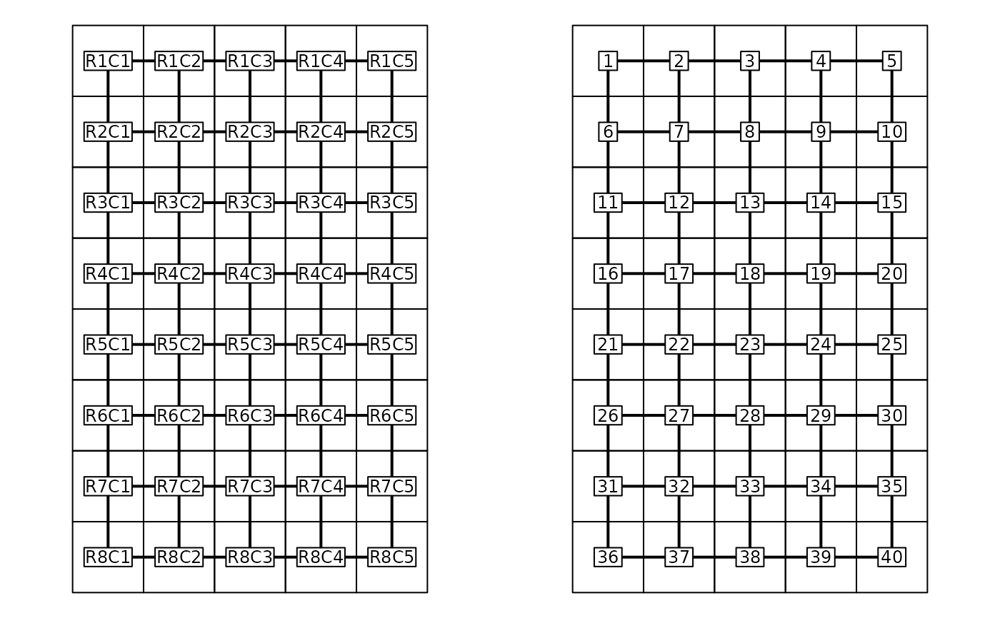
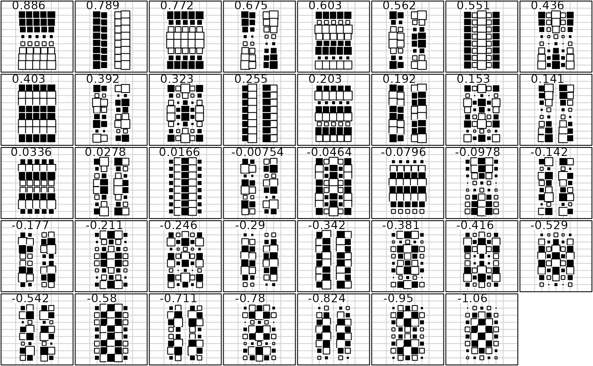

Complete regular grid analysis
gridrowcol.RdThis function defines objects to analyse data sets associated with complete regular grid.
Value
Returns a list containing the following items :
- xy
: a data frame with grid cell coordinates
- area
: a data frame with three variables to display grid cells as areas
- neig
: an object of class
'neig'corresponding to a neighbouring graph of the grid (rook case)- orthobasis
: an object of class
'orthobasis'corresponding to the analytical solution for the neighbouring graph
References
Méot, A., Chessel, D. and Sabatier, D. (1993) Opérateurs de voisinage et analyse des données spatio-temporelles. in J.D. Lebreton and B. Asselain, editors. Biométrie et environnement. Masson, 45-72.
Cornillon, P.A. (1998) Prise en compte de proximités en analyse factorielle et comparative. Thèse, Ecole Nationale Supérieure Agronomique, Montpellier.
Author
Sébastien Ollier sebastien.ollier@u-psud.fr
Daniel Chessel
Examples
w <- gridrowcol(8, 5)
par(mfrow = c(1, 2))
area.plot(w$area, center = w$xy, graph = w$neig, clab = 0.75)
area.plot(w$area, center = w$xy, graph = w$neig, clab = 0.75, label = as.character(1:40))

par(mfrow = c(1, 1))
if(adegraphicsLoaded()) {
fac1 <- w$orthobasis
names(fac1) <- as.character(signif(attr(w$orthobasis, "values"), 3))
s.value(w$xy, fac1, porigin.include = FALSE, plegend.drawKey = FALSE, pgrid.text.cex = 0,
ylim = c(0, 10))
} else {
par(mfrow = c(5,8))
for(k in 1:39)
s.value(w$xy, w$orthobasis[, k], csi = 3, cleg = 0, csub = 2,
sub = as.character(signif(attr(w$orthobasis, "values")[k], 3)),
incl = FALSE, addax = FALSE, cgr = 0, ylim = c(0,10))
par(mfrow = c(1,1))
}
